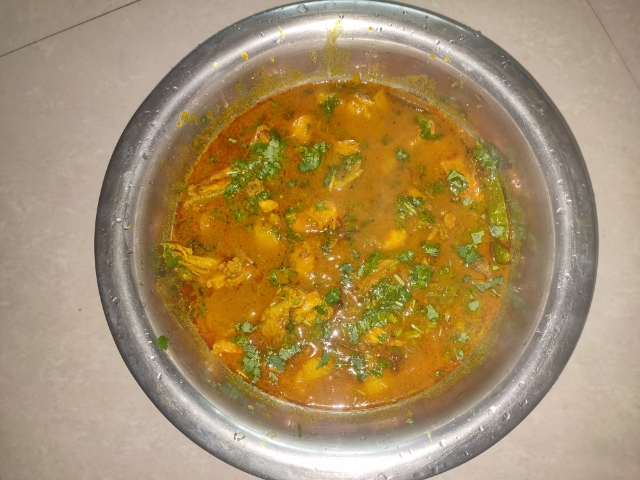

Ingredients
- 1 kilograms chicken
- 1/2 cup tomato puree
- 1 tablespoon garlic paste
- 1 cinnamon stick
- 1 bay leaf
- 1 tablespoon garam masala powder
- 1 tablespoon kasoori methi powder
- 2 1/2 cup water
- 2 onion
- 1 tablespoon ginger paste
- 1 cup cashews
- 1 teaspoon cumin seeds
- 3 red chilli
- 1 tablespoon coriander powder
- 2 tablespoon vegetable oil
- salt as required
- 1/3 cup lemon juice
- 1 teaspoon turmeric
- 1/2 handful coriander leaves
How to make Spicy Chicken Curry
Step 1: Wash the chicken & saute the whole spices
Firstly, wash the chicken under running water and keep it aside. Now, take a non-stick pan and pour little oil in it. Then add whole spices - cumin seeds, cinnamon seeds and bay leaf. Let them cook until the seeds start to crackle.
Step 2: Marinate the chicken & prepare onion, cashews & red chillies paste
On the other hand, marinate the chicken with salt, turmeric powder and lemon juice and keep it aside for 20-30 minutes. Now, using a grinder, grind onion and 1 cup of water to make a puree of thick consistency. Put aside till required. Wash the grinder and put cashews in it and add 1 cup of water. Make a paste of cashews of smooth consistency. Again, wash the grinder and grind red chillies with 1/2 cup of water to form a paste of thick consistency.
Step 3: Cook the onion & tomato puree with the lid on
Next, in the pan with the whole spices, add onion puree with ginger and garlic paste and cook it for 2 minutes. Add tomato puree to the pan and cook for another 2 minutes. Meanwhile, add salt to taste and red chilli paste. Cover the pan with a lid.
Step 4: Add the marinated chicken & cashews & red chilli paste
Then add the marinated chicken pieces in the gravy and let it cook for more 15-20 minutes with the lid on the pan, after 15-20 minutes, check if the chicken pieces are cooked properly. Now, add cashews and red chilli paste into the mixture and cook for another 2 minutes.
Step 5: Add the spices & cook the chicken
Now add garam masala, coriander powder, cashew nut paste and Kasuri methi and mix them all well. Let the chicken curry cook for another 5 minutes and then turn off the flame. Garnish the curry with fresh coriander leaves and serve hot with steamed rice or paratha.
